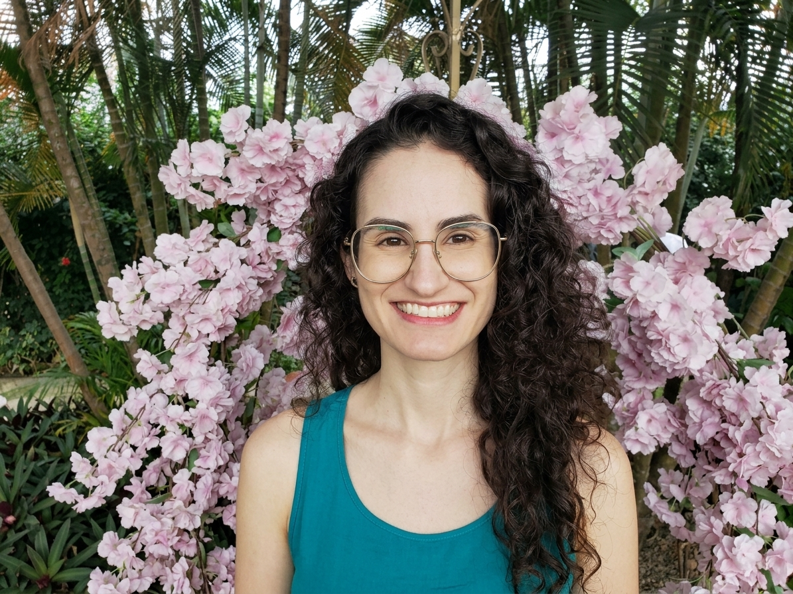

Research interests
Cosmology, cosmic microwave background, 21 cm cosmology.
Recent work
Latest publications
Up to five papers with Camila Paiva Novaes among the first five authors, ordered by first release date. Preprints are labelled separately from journal publications.
Papers checked .
The search is still being verified. This list may be incomplete.
The BINGO project X. Cosmological parameter constraints from HI Intensity Mapping lognormal simulations
A&A 708, A1 (2026)
Accessing the homogeneity scale with 21 cm intensity mapping surveys
Mon Not R Astron Soc (2026)
Fast End-to-End Framework for Cosmological Parameter Inference from CMB Data Using Machine Learning
Astrophys.J.Lett. 1004, L36 (2026)
First Constraints from Marked Angular Power Spectra with Subaru Hyper Suprime-Cam Survey First-Year Data
Mon.Not.Roy.Astron.Soc. 546, stag033 (2026)
Detectability of the 21 cm signal with BINGO through cross-correlation with photometric surveys
JCAP 12, 016 (2025)
How these papers are selected
We check named authors in the order given by the source. Positions 1–5 qualify, including alphabetical author lists. Each paper is counted once across its preprint and journal versions. Dates refer to the first public release, usually arXiv v1, rather than a later revision or journal issue. Lists are reviewed monthly; source coverage and identity checks can leave fewer than five verified papers.